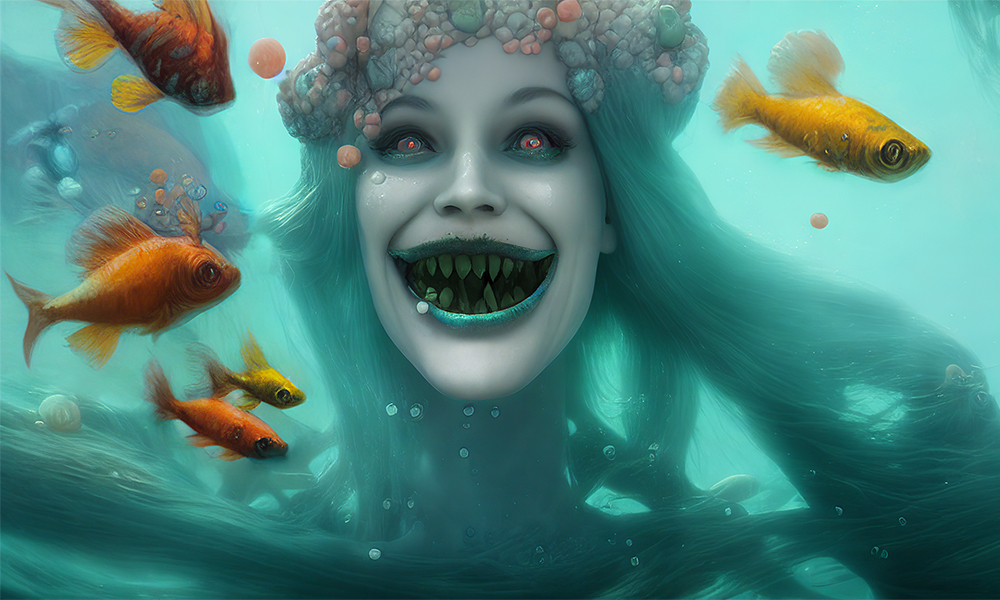
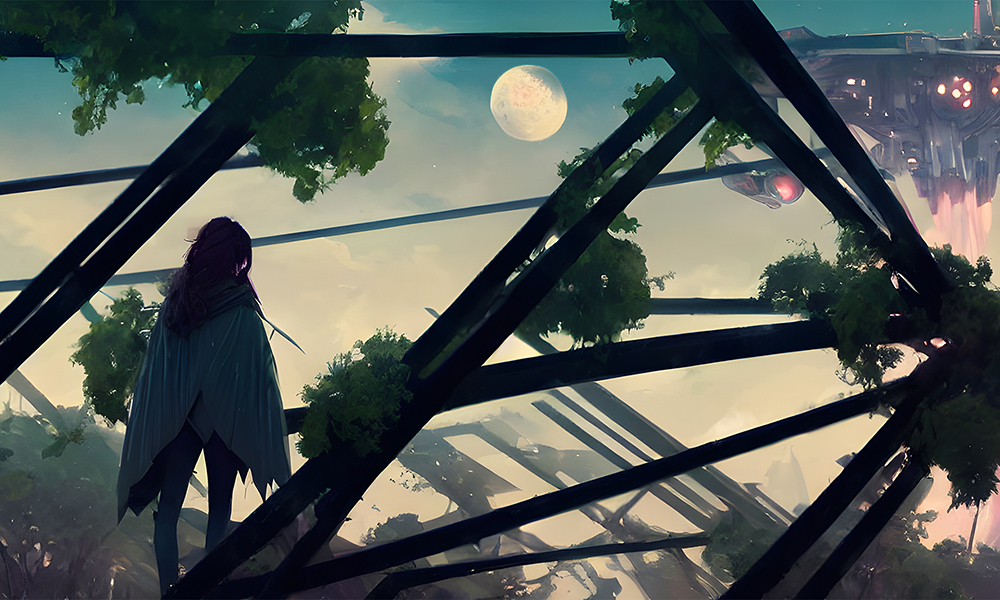
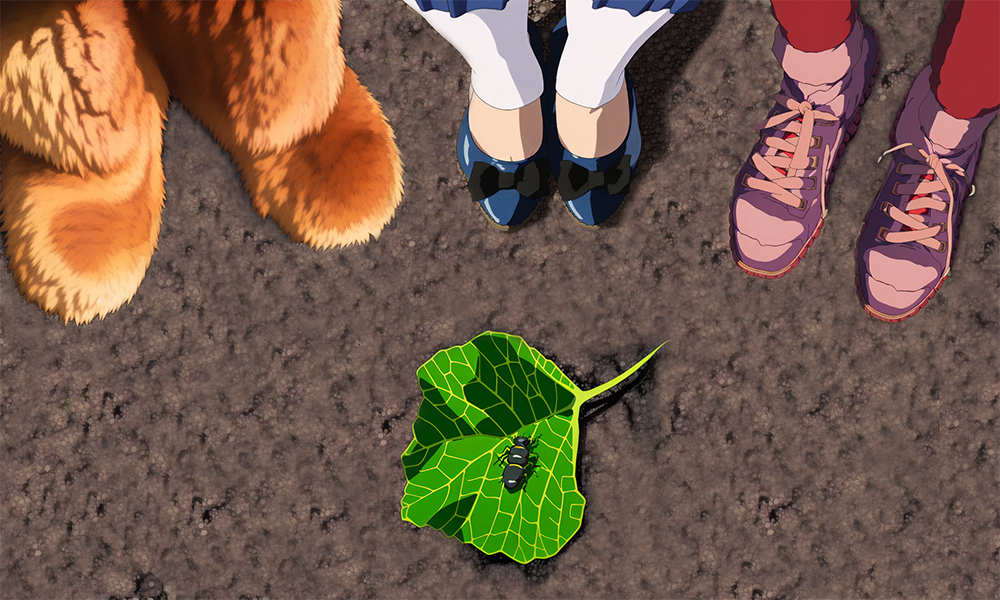
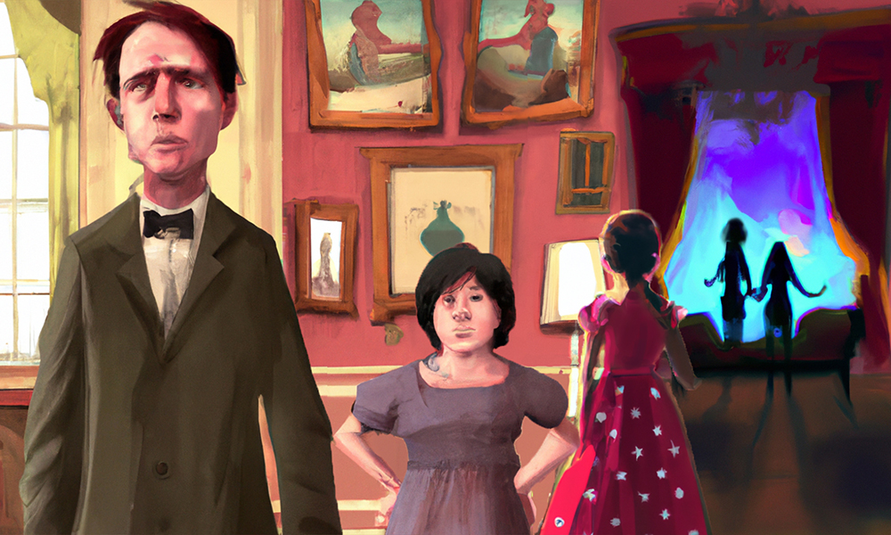

Full confession: when your editor read the first paragraph of our opening story, he thought, 'Hey, this thing is set where I grew up!' It would be wrong to imagine that was the only reason I accepted Cathy Bryant's smart, humorous, grim, characterful, sad, and optimistic tale… but it did make me happy doing it.

Time passes fast, and sweeps memories with it. Over twenty years ago (if you can believe it) the movie 'Memento' took the very concept of memory and turned it into an edge-of-the-seat thriller; Monte Remer makes it into a brink-of-tears tragedy about the aliens closest to us. Some stories prick the emotions so strongly it's almost overwhelming. This one is pure pathos.

Some stories arrive with a story of their own behind them. The far future of culture and horticulture depicted in 'Distant Skies' was originally a performance piece, with original music composed by Ivana Popovic and performed by Toronto's Junction Trio, accompanied by Charlotte Ashley's spoken words—now appearing here in black and white.

We're very pleased to welcome Hermester Barrington to the pages of Mythaxis for a second time—but while his previous visit provided biologically intricate introspection with a dash of the impenetrable academic, here we're given a short, sharp, straightforward slice of the supernatural. Making friends ought to be child's play. Imaginary ones? More so. If that's what they are, of course.
Creative reworkings of Greek mythology. To judge by the number submitted to Mythaxis each year, it's a little-known fact that the editor really doesn't like them—especially not Persephone and Hades, by far the most common, and most grating. Yet beware, editor, of ever ruling them out: sometimes new Greek myths come bearing gifts…
Some people are just annoying. You can try to have sympathy when circumstance works against them, try to be happy for them when things go well, yet there's simply no helping that itch of ill feeling, nor of taking guilty pleasure at even unjust comeuppance. But some suffering exceeds what even the annoying deserve.

Time is almost up on 2022, but given the twists and turns recent history has thrown our way, who'd risk guessing what's coming in 2023? Fittingly then, for our final story of the year Valerie Alexander gives us a piece that's all about time; the dread, or anticipation, of the unknown; and of change.